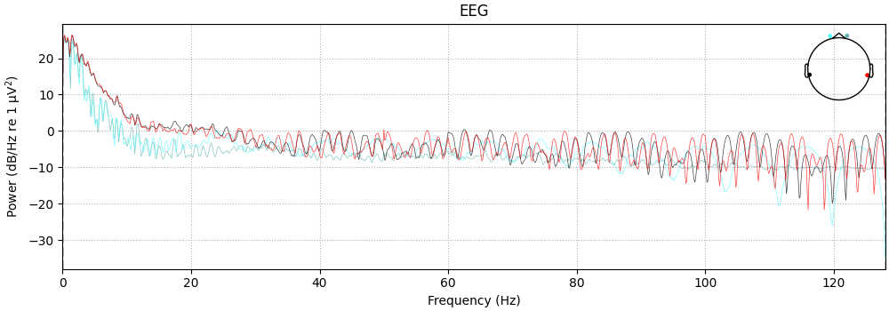
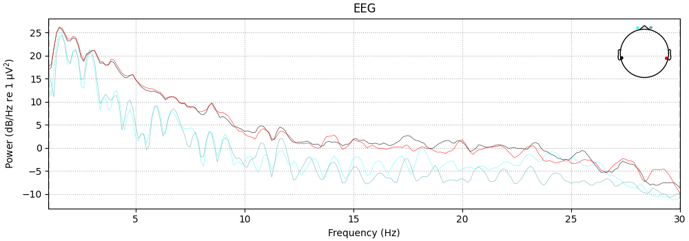
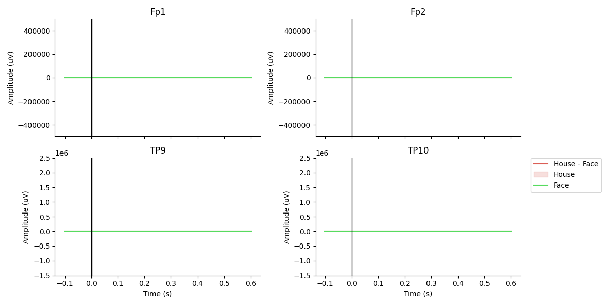

Note
Go to the end to download the full example code.
N170 Load and Visualize Data
This example demonstrates loading, organizing, and visualizing ERP response data from the visual N170 experiment.
Images of faces and houses are shown in a rapid serial visual presentation (RSVP) stream.
The data used is the first subject and first session of the one of the eeg-expy N170 example datasets, recorded using the InteraXon MUSE EEG headset (2016 model). This session consists of six two-minute blocks of continuous recording.
We first use the fetch_datasets to obtain a list of filenames. If these files are not already present in the specified data directory, they will be quickly downloaded from the cloud.
After loading the data, we place it in an MNE Epochs object, and obtain the trial-averaged response.
The final figure plotted at the end shows the N170 response ERP waveform.
Setup
# Some standard pythonic imports
import os
from matplotlib import pyplot as plt
from collections import OrderedDict
import warnings
warnings.filterwarnings('ignore')
# MNE functions
from mne import Epochs,find_events
# EEG-Notebooks functions
from eegnb.analysis.analysis_utils import load_data,plot_conditions
from eegnb.datasets import fetch_dataset
Load Data
We will use the eeg-expy N170 example dataset
Note that if you are running this locally, the following cell will download the example dataset, if you do not already have it.
eegnb_data_path = os.path.join(os.path.expanduser('~/'),'.eegnb', 'data')
n170_data_path = os.path.join(eegnb_data_path, 'visual-N170', 'eegnb_examples')
# If dataset hasn't been downloaded yet, download it
if not os.path.isdir(n170_data_path):
fetch_dataset(data_dir=eegnb_data_path, experiment='visual-N170', site='eegnb_examples');
subject = 1
session = 1
raw = load_data(subject,session,
experiment='visual-N170', site='eegnb_examples', device_name='muse2016_bfn',
data_dir = eegnb_data_path)
Downloading...
From (original): https://drive.google.com/uc?id=1oStfxzEqf36R5d-2Auyw4DLnPj9E_FAH
From (redirected): https://drive.google.com/uc?id=1oStfxzEqf36R5d-2Auyw4DLnPj9E_FAH&confirm=t&uuid=bd34fb84-394e-4ca5-8e4c-e48fd5bd04b9
To: /home/runner/.eegnb/data/downloaded_data.zip
0%| | 0.00/33.1M [00:00<?, ?B/s]
5%|▍ | 1.57M/33.1M [00:00<00:02, 15.6MB/s]
33%|███▎ | 11.0M/33.1M [00:00<00:00, 53.0MB/s]
71%|███████ | 23.6M/33.1M [00:00<00:00, 80.3MB/s]
97%|█████████▋| 32.0M/33.1M [00:00<00:00, 80.1MB/s]
100%|██████████| 33.1M/33.1M [00:00<00:00, 74.1MB/s]
Loading these files:
/home/runner/.eegnb/data/visual-N170/eegnb_examples/muse2016_bfn/subject0001/session001/recording_2022-03-20-23.09.14.csv
/home/runner/.eegnb/data/visual-N170/eegnb_examples/muse2016_bfn/subject0001/session001/recording_2022-03-20-22.51.41.csv
/home/runner/.eegnb/data/visual-N170/eegnb_examples/muse2016_bfn/subject0001/session001/recording_2022-03-20-23.29.19.csv
/home/runner/.eegnb/data/visual-N170/eegnb_examples/muse2016_bfn/subject0001/session001/recording_2022-03-20-23.57.53.csv
/home/runner/.eegnb/data/visual-N170/eegnb_examples/muse2016_bfn/subject0001/session001/recording_2022-03-20-23.41.11.csv
/home/runner/.eegnb/data/visual-N170/eegnb_examples/muse2016_bfn/subject0001/session001/recording_2022-03-20-22.42.26.csv
/home/runner/.eegnb/data/visual-N170/eegnb_examples/muse2016_bfn/subject0001/session001/recording_2022-03-20-23.02.59.csv
/home/runner/.eegnb/data/visual-N170/eegnb_examples/muse2016_bfn/subject0001/session001/recording_2022-03-20-22.33.14.csv
/home/runner/.eegnb/data/visual-N170/eegnb_examples/muse2016_bfn/subject0001/session001/recording_2022-03-20-23.51.54.csv
/home/runner/.eegnb/data/visual-N170/eegnb_examples/muse2016_bfn/subject0001/session001/recording_2022-03-20-23.17.10.csv
['TP9', 'Fp1', 'Fp2', 'TP10', 'stim']
['TP9', 'Fp1', 'Fp2', 'TP10', 'stim']
Creating RawArray with float64 data, n_channels=5, n_times=76816
Range : 0 ... 76815 = 0.000 ... 300.059 secs
Ready.
['TP9', 'Fp1', 'Fp2', 'TP10', 'stim']
['TP9', 'Fp1', 'Fp2', 'TP10', 'stim']
Creating RawArray with float64 data, n_channels=5, n_times=76744
Range : 0 ... 76743 = 0.000 ... 299.777 secs
Ready.
['TP9', 'Fp1', 'Fp2', 'TP10', 'stim']
['TP9', 'Fp1', 'Fp2', 'TP10', 'stim']
Creating RawArray with float64 data, n_channels=5, n_times=76768
Range : 0 ... 76767 = 0.000 ... 299.871 secs
Ready.
['TP9', 'Fp1', 'Fp2', 'TP10', 'stim']
['TP9', 'Fp1', 'Fp2', 'TP10', 'stim']
Creating RawArray with float64 data, n_channels=5, n_times=76780
Range : 0 ... 76779 = 0.000 ... 299.918 secs
Ready.
['TP9', 'Fp1', 'Fp2', 'TP10', 'stim']
['TP9', 'Fp1', 'Fp2', 'TP10', 'stim']
Creating RawArray with float64 data, n_channels=5, n_times=76816
Range : 0 ... 76815 = 0.000 ... 300.059 secs
Ready.
['TP9', 'Fp1', 'Fp2', 'TP10', 'stim']
['TP9', 'Fp1', 'Fp2', 'TP10', 'stim']
Creating RawArray with float64 data, n_channels=5, n_times=76768
Range : 0 ... 76767 = 0.000 ... 299.871 secs
Ready.
['TP9', 'Fp1', 'Fp2', 'TP10', 'stim']
['TP9', 'Fp1', 'Fp2', 'TP10', 'stim']
Creating RawArray with float64 data, n_channels=5, n_times=76912
Range : 0 ... 76911 = 0.000 ... 300.434 secs
Ready.
['TP9', 'Fp1', 'Fp2', 'TP10', 'stim']
['TP9', 'Fp1', 'Fp2', 'TP10', 'stim']
Creating RawArray with float64 data, n_channels=5, n_times=93280
Range : 0 ... 93279 = 0.000 ... 364.371 secs
Ready.
['TP9', 'Fp1', 'Fp2', 'TP10', 'stim']
['TP9', 'Fp1', 'Fp2', 'TP10', 'stim']
Creating RawArray with float64 data, n_channels=5, n_times=76816
Range : 0 ... 76815 = 0.000 ... 300.059 secs
Ready.
['TP9', 'Fp1', 'Fp2', 'TP10', 'stim']
['TP9', 'Fp1', 'Fp2', 'TP10', 'stim']
Creating RawArray with float64 data, n_channels=5, n_times=76936
Range : 0 ... 76935 = 0.000 ... 300.527 secs
Ready.
Marking edge at 76816 samples (maps to 300.062 sec)
Marking edge at 153560 samples (maps to 599.844 sec)
Marking edge at 230328 samples (maps to 899.719 sec)
Marking edge at 307108 samples (maps to 1199.641 sec)
Marking edge at 383924 samples (maps to 1499.703 sec)
Marking edge at 460692 samples (maps to 1799.578 sec)
Marking edge at 537604 samples (maps to 2100.016 sec)
Marking edge at 630884 samples (maps to 2464.391 sec)
Marking edge at 707700 samples (maps to 2764.453 sec)
Visualize the power spectrum
raw.plot_psd()

NOTE: plot_psd() is a legacy function. New code should use .compute_psd().plot().
Effective window size : 8.000 (s)
Plotting power spectral density (dB=True).
<MNELineFigure size 1000x350 with 2 Axes>
Filtering
raw.filter(1,30, method='iir')
raw.plot_psd(fmin=1, fmax=30);

Filtering raw data in 10 contiguous segments
Setting up band-pass filter from 1 - 30 Hz
IIR filter parameters
---------------------
Butterworth bandpass zero-phase (two-pass forward and reverse) non-causal filter:
- Filter order 16 (effective, after forward-backward)
- Cutoffs at 1.00, 30.00 Hz: -6.02, -6.02 dB
NOTE: plot_psd() is a legacy function. New code should use .compute_psd().plot().
Effective window size : 8.000 (s)
Plotting power spectral density (dB=True).
<MNELineFigure size 1000x350 with 2 Axes>
Epoching
# Create an array containing the timestamps and type of each stimulus (i.e. face or house)
events = find_events(raw)
event_id = {'House': 1, 'Face': 2}
# Create an MNE Epochs object representing all the epochs around stimulus presentation
epochs = Epochs(raw, events=events, event_id=event_id,
tmin=-0.1, tmax=0.6, baseline=None,
reject={'eeg': 5e-5}, preload=True,
verbose=False, picks=[0,1,2,3])
print('sample drop %: ', (1 - len(epochs.events)/len(events)) * 100)
epochs
Finding events on: stim
3740 events found on stim channel stim
Event IDs: [1 2]
sample drop %: 9.919786096256688
Epoch average
conditions = OrderedDict()
#conditions['House'] = [1]
#conditions['Face'] = [2]
conditions['House'] = ['House']
conditions['Face'] = ['Face']
diffwav = ('Face', 'House')
fig, ax = plot_conditions(epochs, conditions=conditions,
ci=97.5, n_boot=1000, title='',
diff_waveform=diffwav,
channel_order=[1,0,2,3])
# reordering of epochs.ch_names according to [[0,2],[1,3]] of subplot axes
# Manually adjust the ylims
for i in [0,2]: ax[i].set_ylim([-0.5e6,0.5e6])
for i in [1,3]: ax[i].set_ylim([-1.5e6,2.5e6])
plt.tight_layout()

Total running time of the script: (0 minutes 4.557 seconds)